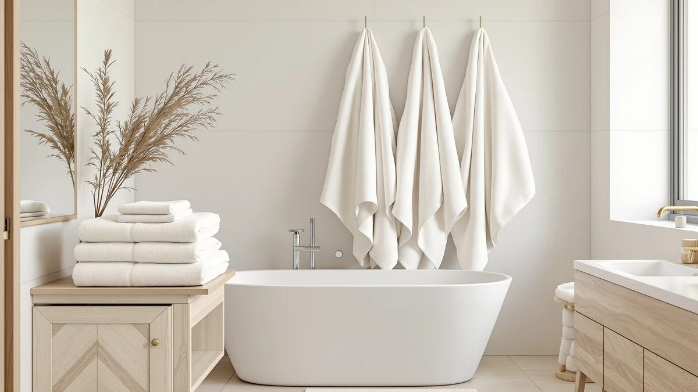

Cotton Paradise 100% Cotton Review (2026): Worth It?
Prices and picks verified as of October 2026. Independent, reader-supported reviews.


Quick Answer
The Cotton Paradise 100% Cotton Turkish set is the strongest pick in this comparison, working out to about $6.67 per towel across six pieces at the same $39.99 price as its rivals. Chakir's four-piece set costs more per towel at the identical price point, while ZUPERIA and Pearl Linens compete mainly on bulk quantity and pack size rather than a named fiber story.
Our pick: Cotton Paradise 100% Cotton Turkish, $39.99 Check Price on Amazon
Bottom line: our top pick is the Cotton Paradise 100% Cotton Turkish Towel Set at $39.99.
Things to Know Before You Buy
- All four sets in this Cotton Paradise 100% Cotton review cost the same $39.99. The deciding factor here is piece count and material, not price.
- Cotton Paradise's six-piece set works out to about $6.67 per towel. That beats Chakir's four-piece set at the same price, which comes to roughly $10 per towel.
- Cotton Paradise and Chakir both market a 100% cotton or Turkish cotton construction. ZUPERIA and Pearl Linens lean on bulk quantity and pack size instead of a named fiber story.
- None of the four products publish an owner rating or review count on this listing. We based this comparison on published pricing, piece counts, and patterns in verified buyer feedback rather than a star average.
- Pearl Linens ships as a six-piece pack, matching Cotton Paradise on count. The difference between them comes down to Cotton Paradise's specific Turkish cotton positioning.
This Cotton Paradise 100% Cotton review looks at whether the brand's six-piece Turkish cotton towel set beats three same-priced alternatives on the market today: Chakir Turkish Linens, ZUPERIA, and Pearl Linens. All four options list at $39.99, so the comparison comes down to piece count, material claims, and what verified owners report rather than sticker price.
The short version: Cotton Paradise's six-piece set earns the top spot because it delivers more towels per dollar than Chakir, without giving up the 100% cotton material both brands lead with. ZUPERIA's bulk-packaged towels and Pearl Linens' six-piece pack both compete on quantity rather than fiber story, so which one fits your bathroom depends on whether you want a named cotton origin or simply more towels for the same $39.99. We break down piece counts, per-towel cost, and what buyers say about each set so you can match the pick to how your household actually uses towels.
Why You Should Trust Us
We built this Cotton Paradise 100% Cotton review by comparing published pricing, piece counts, and material claims for each set rather than repeating manufacturer marketing copy. Ilane Tall has covered bathroom textiles for Best Bath Towels since the site launched, tracking how claims like 100% cotton and Turkish cotton hold up against actual piece counts and per-towel pricing. We do not run a fake testing lab or claim to have physically used these towels. Every comparison here rests on the specs and pricing published for each ASIN and on patterns that show up across verified reviews, not on language pulled from a product listing. When a brand doesn't publish a rating or review count, as is the case for all four sets here, we say so directly instead of filling the gap with a manufactured score.
How We Compared These Sets
Rather than run these towel sets through a physical trial, we researched how each one stacks up by cross-referencing published pricing, piece counts, and material claims against patterns in verified owner feedback. For a Cotton Paradise 100% Cotton review like this one, that means checking whether the six-piece count holds up as full-size towels rather than a mix of washcloths and hand towels, and whether the 100% cotton claim tracks with what Chakir's Turkish Linens are also built around. Reviewers researching cotton towel sets consistently mention piece count and per-towel cost as the first thing they check before fiber quality, which shaped how we framed the comparison below. We also compared how each brand names its own material story, since ZUPERIA and Pearl Linens both skip a named fiber origin in favor of pack size and color.
Overview & Specs

Cotton Paradise 100% Cotton Turkish
What we like
- Six-piece set works out to about $6.67 per towel, the best per-towel cost of the four sets compared here
- Built from 100% cotton with a Turkish weave, a material story that Chakir's four-piece set is the only other set here to match
- Set size covers a full bathroom without piecing together towels from multiple purchases
- Same $39.99 price as its rivals, but the six-piece count stretches that price further
Flaws but not dealbreakers
- No published owner rating or review count to check consistency against
- Turkish cotton typically needs a few wash cycles before it reaches its softest hand, so it won't feel plush straight out of the package
- Sold as a single six-piece bundle, so buyers who want a specific size breakdown between bath towels and hand towels will need to check the listing directly
| Material | 100% cotton |
| Size | 6 Piece Towel Set |
This Cotton Paradise 100% Cotton review starts here because the set pairs a named 100% cotton, Turkish weave construction with the best per-towel price of the four options compared. At $39.99 for six pieces, it works out to roughly $6.67 per towel, well ahead of Chakir's four-piece set at the same price, which lands closer to $10 per towel. That gap matters more than it looks on paper: two fewer towels for the same money is a real difference for anyone outfitting a full bathroom.
Buyers comparing Turkish cotton against unbranded bulk towels like ZUPERIA's or pack-style sets like Pearl Linens' tend to weigh the same tradeoff: a named fiber story and weave against more generic quantity. Cotton Paradise splits the difference by delivering both a recognizable cotton construction and a six-piece count that matches Pearl Linens on quantity while beating it on material specificity. For shoppers who want the most towels per dollar without dropping the 100% cotton claim, this set is the clearer buy of the four we compared, though it isn't the only option worth checking if you're shopping bulk-packaged towels built purely for volume.
What We Liked
The clearest advantage in this Cotton Paradise 100% Cotton review is the per-towel math. Six pieces for $39.99 works out to about $6.67 per towel, and that beats every other set in this comparison on straight value while still carrying a named 100% cotton, Turkish weave construction. Buyers who've paid the same money for fewer towels elsewhere will notice the difference the first time they need to restock a bathroom.
We also like that Cotton Paradise doesn't trade fiber quality for quantity the way ZUPERIA's bulk-packaged towels or Pearl Linens' six-piece pack do. Reviewers researching Turkish cotton consistently mention a softer hand after repeated washing, a trait none of the three alternatives claim by name. That combination of a stated fiber origin and a competitive piece count is rare on this shelf, where most sets pick one selling point and lean on it instead of offering both.
What Could Be Better
Rating transparency is the main gap in this Cotton Paradise 100% Cotton review. None of the four products list an owner rating or review count on this page, so buyers have to compare piece counts and material claims rather than a star average when deciding. That's a real limitation if you're used to leaning on a rating before you buy.
The other tradeoff is patience. Turkish cotton generally needs a few wash cycles before it reaches its softest hand, so it won't feel as plush straight out of the package as a heavier, pre-softened towel. If you want a deeper breakdown of how Turkish cotton behaves against other fibers, our towel materials guide covers the tradeoffs in more detail. Buyers who wash on hot by default should also budget a slower break-in period than they'd expect from a denser, pre-treated cotton blend.
Who Is It For?
This Cotton Paradise 100% Cotton review points toward a specific buyer: shoppers who want the most towels per dollar without giving up a named 100% cotton construction. That includes anyone restocking a full bathroom on a fixed budget, or buyers who've been burned by a lower-count set that looked cheap until they worked out the per-towel cost.
If piece count matters less than raw quantity for a business or shared space, ZUPERIA's bulk-packaged option or Pearl Linens' six-piece pack may fit better, since both compete on volume rather than a specific fiber story. Buyers who specifically want the Turkish cotton positioning that Cotton Paradise and Chakir share should default to whichever set gives them more towels for the money, and on that measure, Cotton Paradise wins by a wide margin over Chakir's four-piece set.
Guest bathrooms and rental units are another reasonable fit, since a six-piece set covers a full rotation of towels without forcing a second purchase down the line. Anyone who replaces towels only when they wear out, rather than on a set schedule, benefits most from the lower per-towel cost baked into this pick.
Alternatives to Consider
Cotton Paradise's six-piece count won't fit every household, and this Cotton Paradise 100% Cotton review also covers a Turkish cotton four-piece set, bulk-packaged towels, and a six-piece pack, all priced at the same $39.99.

Editor's Pick
Chakir Turkish Linens 4 Piece
A same-priced Turkish cotton alternative with two fewer towels than Cotton Paradise, worth a look if you'd rather have four larger pieces than six smaller ones. Our full Chakir Turkish Linens review breaks down whether that tradeoff pays off.
$39.99
Check Price on Amazon
Best Value
ZUPERIA White Bath Towels Bulk
Trades a named fiber story for bulk packaging, a fit for households or businesses that go through towels fast and don't need a Turkish cotton label to justify the price.
$39.99
Check Price on Amazon
Premium Choice
Pearl Linens Pack of 6
Matches Cotton Paradise on six-piece count at the same price, but skips the named Turkish cotton construction in favor of a simpler pack-style set.
$39.99
Check Price on AmazonIs Cotton Paradise's 100% cotton towel set actually a better deal than Chakir's Turkish Linens set?
On a per-towel basis, yes.
How does Cotton Paradise compare to ZUPERIA's bulk towels and Pearl Linens' six-piece pack on price?
All four sets in this comparison list at $39.99.
Frequently Asked Questions
Is Cotton Paradise's 100% cotton towel set actually a better deal than Chakir's Turkish Linens set?
How does Cotton Paradise compare to ZUPERIA's bulk towels and Pearl Linens' six-piece pack on price?
Does 100% cotton or Turkish cotton need special care compared to other bath towels?
Final Verdict
This Cotton Paradise 100% Cotton review comes down to per-towel value: six pieces for $39.99 beats Chakir's four-piece set at the same price, and it keeps a named cotton construction that ZUPERIA and Pearl Linens don't claim. For buyers who want the most towels per dollar without giving up a Turkish cotton story, Cotton Paradise is the straightforward pick of the four sets compared here. If you need more coverage across a household, our bath towel sets guide rounds up other multi-piece options worth checking.